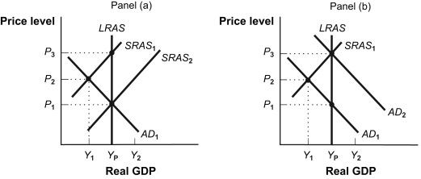
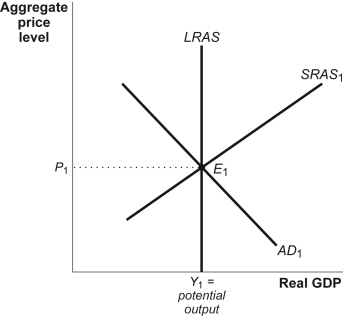

Multiple Choice
Identify the
choice that best completes the statement or answers the question.
|
|
|
1.
|
Menu costs of inflation are the:
A. | costs associated with money being a less reliable unit of
measurement. | B. | costs of transactions associated with avoiding the inflation tax. | C. | costs associated
with businesses changing prices. | D. | revenue the government gets from printing
money. | E. | costs associated with negotiating lower prices. |
|
|
|
2.
|
Deflation is a(n):
A. | decrease in the purchasing power of a unit of money. | B. | appreciation of the
nation's currency. | C. | decrease in the average level of
prices. | D. | increase in the average level of prices. | E. | problem only for
developing nations. |
|
|
|
3.
|
Unanticipated inflation:
A. | increases the value of money. | B. | decreases uncertainty about the
future. | C. | reduces the value of the debt owed by borrowers. | D. | helps
lenders. | E. | benefits potential home buyers. |
|
|
|
4.
|
Unanticipated inflation:
A. | helps those on fixed incomes. | B. | hurts borrowers and helps
lenders. | C. | helps borrowers and hurts lenders. | D. | causes nominal interest rates to
decrease. | E. | causes people to hold more cash. |
|
|
|
5.
|
When there is deflation in the economy:
A. | the general price level falls. | B. | the general price level
increases. | C. | the nominal interest rate rises. | D. | the general price level becomes
negative. | E. | the Consumer Price Index becomes negative. |
|
|
|
6.
|
If the cost of a market basket is $150 in Year 1 and $200 in Year 2, the price
index for Year 1 with a Year 2 base is:
A. | 75. | B. | 100. | C. | 133. | D. | 150. | E. | 95. |
|
|
|
| Year | Consumer Price
Index | | 1 | 80 | | 2 (base year) | 100 | | 3 | 105 | | 4 | 125 | | 5 | 150 | Table 15-1: The
Consumer Price Index | | |
|
|
|
7.
|
Use Table 15-1. The approximate rate of inflation in Year 3 is _____
percent.
|
|
|
8.
|
A graphical representation of the relationship between the total quantity of
goods and services demanded and the price level is the:
A. | aggregate demand curve. | B. | average price level. | C. | circular flow
model. | D. | GDP curve. | E. | aggregate supply
curve. |
|
|
|
9.
|
The aggregate demand curve is negatively sloped in part because of the impact of
interest rates on:
A. | potential output. | B. | net exports. | C. | consumption and
investment. | D. | government purchases. | E. | productivity. |
|
|
|
10.
|
Increasing the quantity of money in circulation shifts the:
A. | aggregate demand curve to the left. | B. | long-run aggregate supply curve to the
right. | C. | aggregate demand curve to the right. | D. | short-run aggregate supply curve to the
right. | E. | short-run aggregate supply curve to the left. |
|
|
|
11.
|
Changes in aggregate demand can be caused by changes in:
A. | the stock of physical capital. | B. | business costs. | C. | raw materials
costs. | D. | the expenses of complying with government regulations. | E. | technology. |
|
|
|
12.
|
An increase in wealth or an increase in government spending will result in
a:
A. | shift to the left of the short-run aggregate supply curve. | B. | shift right of the
aggregate demand curve. | C. | shift right of the short-run aggregate supply
curve. | D. | movement along the aggregate demand curve. | E. | shift right of the
long-run aggregate supply curve. |
|
|
|
13.
|
Sticky wages and prices occur:
A. | in the long run. | B. | in the short run. | C. | in both the short
and long run. | D. | only when the economy is operating above its potential real GDP. | E. | only when the
economy is operating below its potential real GDP. |
|
|
|
14.
|
Suppose the equilibrium aggregate price level is rising and the equilibrium
level of real GDP is falling. Which of the following most likely caused these changes?
A. | An increase in short-run aggregate supply. | B. | An increase in
aggregate demand. | C. | A decrease in short-run aggregate
supply. | D. | A decrease in aggregate demand. | E. | An increase in short-run aggregate supply and
an increase in aggregate demand. |
|
|
|
15.
|
When the economy is producing output below potential, it has a(n):
A. | full-employment output. | B. | natural level of
employment. | C. | recessionary gap. | D. | inflationary gap. | E. | expanding
economy. |
|
|
|
Figure 19-5: Policy Alternatives

|
|
|
16.
|
Use the “Policy Alternatives” Figure 19-5. Assume that
the economy depicted in Panel (a) is in short-run equilibrium with AD1 and
SRAS1. If the economy is left to correct itself:
A. | real interest rates will fall which will shift SRAS
rightward. | B. | lower wages will result in a gradual shift from SRAS1 to
SRAS2. | C. | long-run equilibrium will be established at
YP and P3. | D. | aggregate demand will shift
leftward. | E. | aggregate demand will shift rightward to Yp and
P1. |
|
|
|
17.
|
Use the “Policy Alternatives” Figure 19-5. In Panel
(b), the economy is initially in short-run equilibrium at real GDP level Y1 and
price level P2. At real GDP level Y1 there is:
A. | an inflationary gap. | B. | a recessionary gap. | C. | no
gap. | D. | long-run equilibrium. | E. | an unemployment rate that is less than the
natural rate of unemployment. |
|
|
|
18.
|
Inflationary and recessionary gaps are closed by self-correcting adjustments
that shift:
A. | the SRAS curve. | B. | the AD curve. | C. | the LRAS
curve. | D. | both the SRAS curve and the LRAS curve. | E. | both the AD
curve and LRAS curve. |
|
|
|
Figure 19-7: AD–AS Model II

|
|
|
19.
|
Use the “AD–AS Model II” Figure 19-7. When firms
decrease their investment spending, which of the following will take place in the short run?
A. | LRAS will shift to the left. | B. | LRAS will shift to the
right. | C. | AD curve will shift to the right. | D. | AD curve will
shift to the left. | E. | SRAS curve will shift to the
left. |
|
|
|
20.
|
Use the “AD–AS Model II” Figure 19-7. If the
central bank causes a significant decrease in the quantity of money that is circulating in the
economy, then which of the following will take place?
A. | LRAS will shift to the right. | B. | LRAS will shift to the
left. | C. | AD curve will shift to the left. | D. | AD curve will
shift to the right. | E. | SRAS curve will shift to the
left. |
|
|
|
21.
|
A change in taxes or a change in government transfers affects consumption
through a change in:
A. | autonomous consumption. | B. | the marginal propensity to
save. | C. | disposable income. | D. | government spending. | E. | investment
demand. |
|
|
|
22.
|
Contractionary fiscal policy would include:
A. | increased government purchases. | B. | increased government
transfers. | C. | increased taxes. | D. | decreased money supply. | E. | increased money
supply. |
|
|
|
23.
|
A government might want to increase aggregate demand to:
A. | close an inflationary gap. | B. | close a recessionary gap. | C. | lower prices in the
economy. | D. | lower employment in the economy. | E. | decrease nominal interest
rates. |
|
|
|
24.
|
If the economy were suffering from an inflationary gap, government should
follow:
A. | an expansionary policy which would shift the AD curve to the
right. | B. | a contractionary policy which would shift the AD curve to the
right. | C. | an expansionary policy which would shift the AD curve to the
left. | D. | a contractionary policy which would shift the AD curve to the
left. | E. | a contractionary policy which would shift the SRAS curve to the
left. |
|
|
|
25.
|
If the MPC is 0.8 and the government spending decreases by $50 million,
then equilibrium GDP will decrease by:
A. | $40 million. | B. | $50 million. | C. | $200
million. | D. | $250 million. | E. | $100 million. |
|